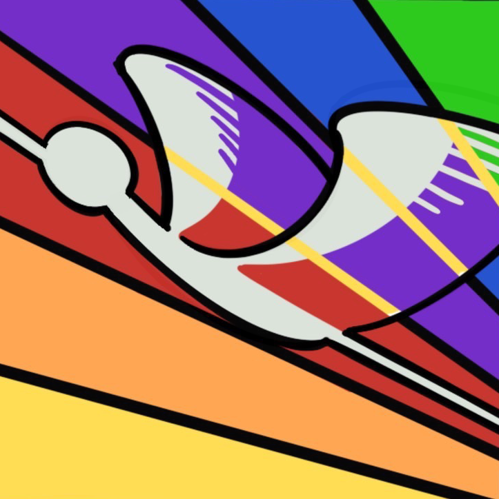

DATE
2026.10.10 sat
8:35 〜 16:30
NEWS
- 2026.10.02 文化祭公式ホームページを公開しました。
LOGO

「鶴命」 ~ 一瞬を、一生の思い出に ~
今年度のテーマは「鶴命」、キャッチフレーズは「一瞬を、一生の思い出に」です。 鶴丸らしく「革命」をおこし、文化祭の一瞬、一瞬の時間を一生の思い出にしたいという思いが込められています。 ロゴは鶴が様々な個性の中飛翔する姿を現しています。文化祭でも、様々な個性を飛翔させたいという思いが込められています。
MAP
ACCESS
会場
本校校舎・体育館・中庭
最寄り駅
JR鹿児島中央駅から徒歩10分 / 「鶴丸高校前」停留所 下車すぐ
注意事項
敷地内および周辺に駐車場はございません。公共交通機関をご利用ください。